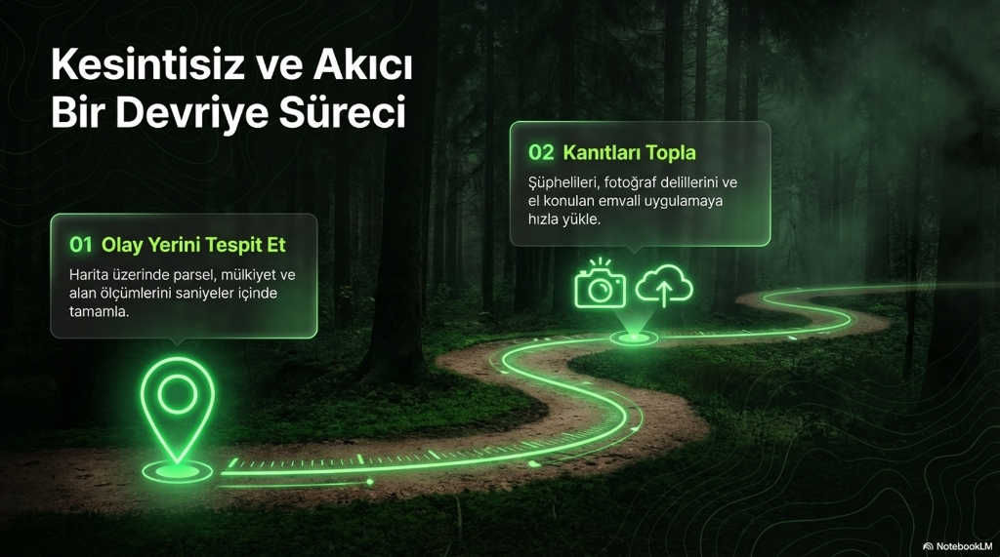
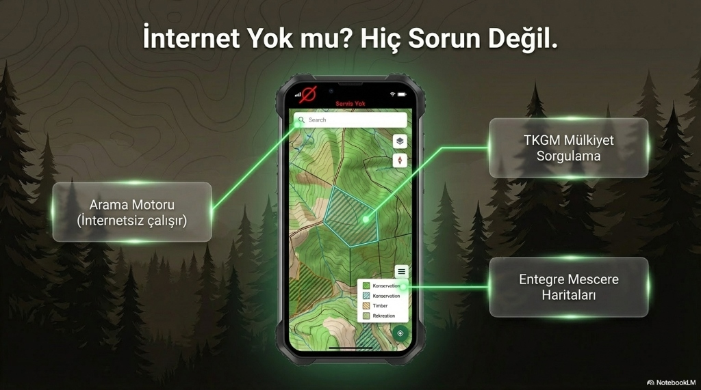
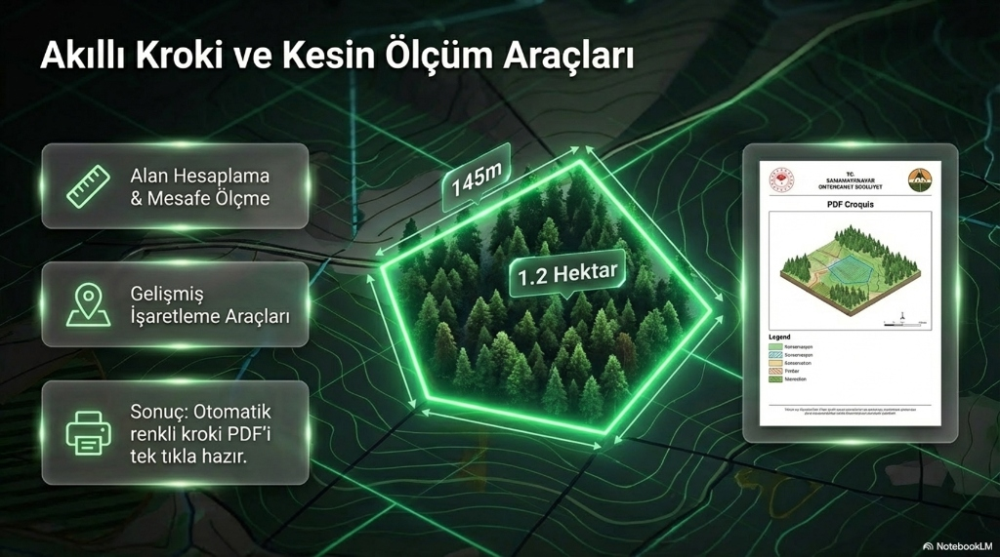
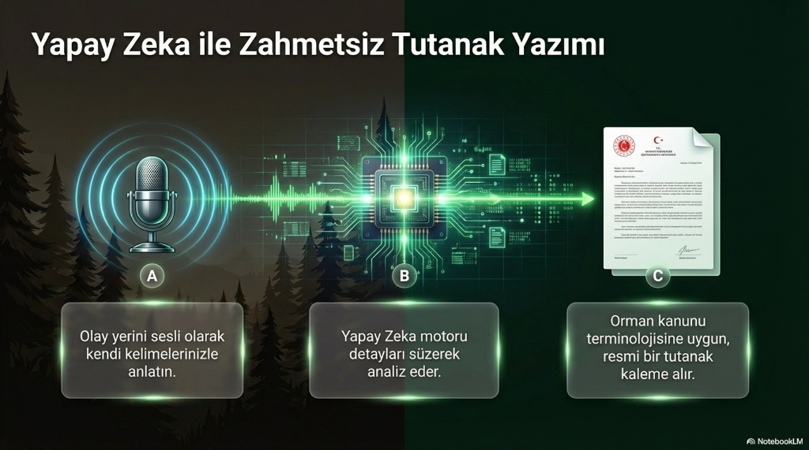
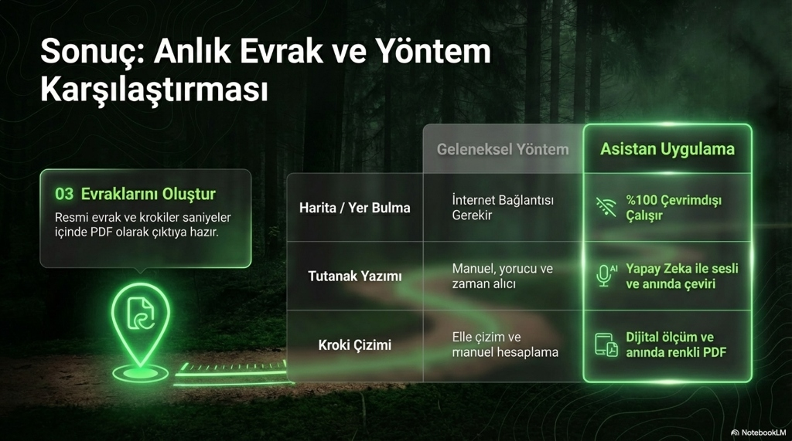

Devlet Ormanlarını Birlikte Koruyalım
Sahadaki
Sahadaki
Güçlendirici Asistanınız.
Orman muhafaza memurları için özel olarak tasarlandı. Çevrimdışı haritalar, mülkiyet sorgulama ve yapay zeka destekli sesli tutanak yazımı ile olay yerinde zaman kazanın.

Sahada Fark Yaratan Özellikler
Uygulamanın gücü karmaşık işlemleri ne kadar basitleştirdiği ile ölçülür.





Sahaya İnmeye Hazır Mısınız?
Android cihazınız için uyumlu en güncel APK'yı indirerek asistanınızı cebinize yükleyin.
V.1.1.6 İndir